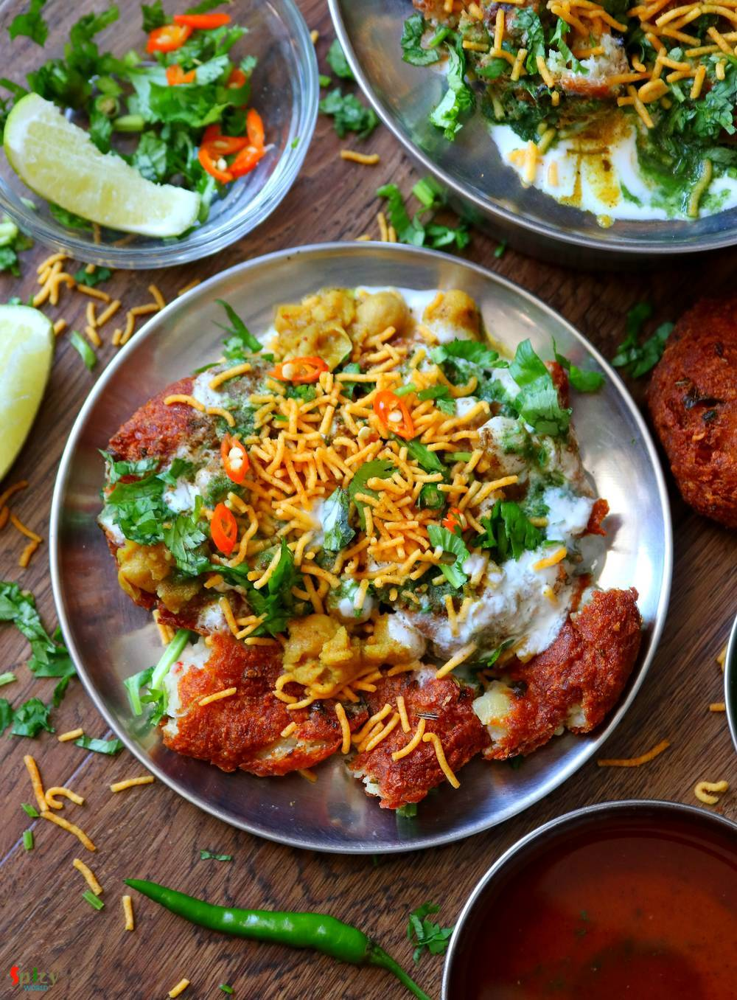
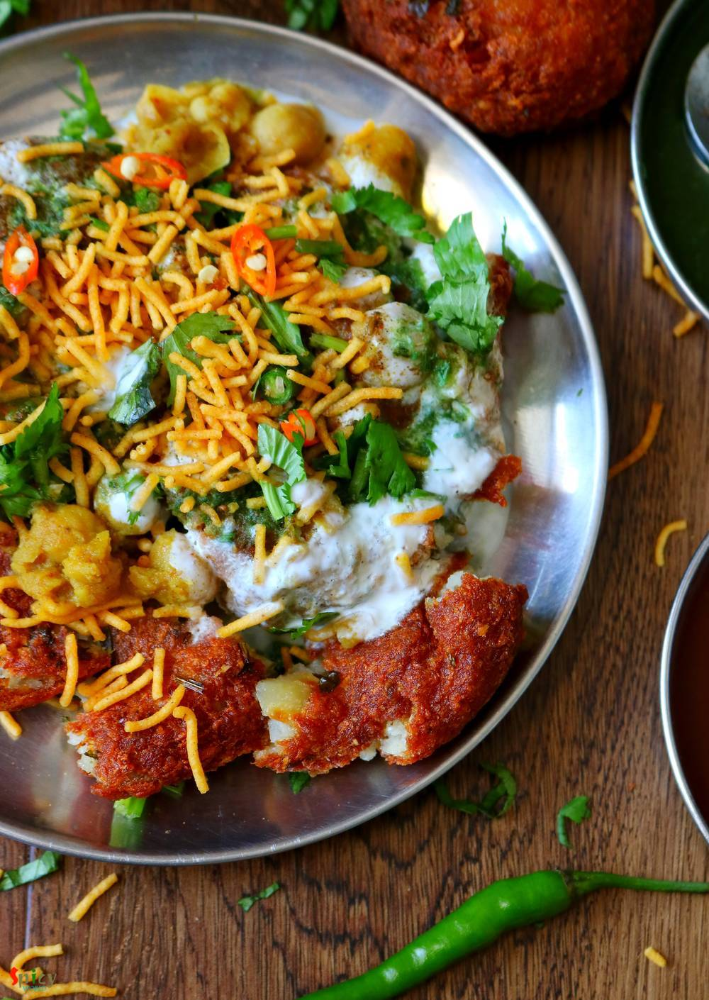
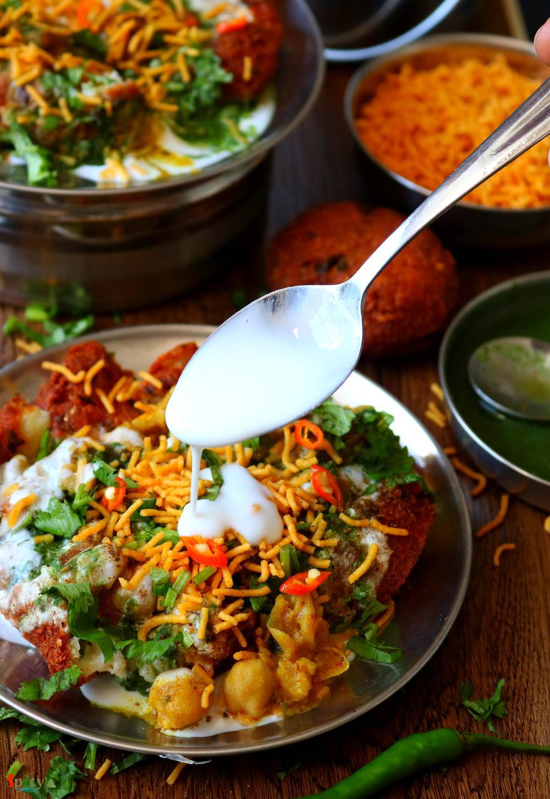

Simple and Easy Recipes
Aloo Tikki Chaat
© 2016 Spicy World, Published on: Jul 9, 2019
Aloo tikki means Potato cutlets. Aloo tikki chaat is a mouth watering snack from North Indian cuisine. Main trick about this recipe is to make crispy and crunchy tikkis. If they become soggy, the chaat will not come out that tasty. Usually these tikkis are served with Chana masala (chickpea curry), Yogurt, Tamarind chutney, Green chutney and Sev. Do give this recipe a try and let me know how it turned out for you.

Ingredients
- 2 big potatoes, boiled, peeled and grated.
- 2 Teaspoons of salt. (you may need more)
- 1 Teaspoon of black salt.
- 2 Tablespoons of roasted coriander powder.
- 1 Tablespoon of chili fakes.
- 2 green chilies, chopped.
- Some chopped coriander leaves.
- 2 Tablespoons of lemon juice.
- 1/4th cup of rice flour.
- 2-3 cups of vegetable oil for frying.
- 1 cup of cooked ghugni / ragda / chana masala.
- Half cup of yogurt beaten with some water, salt and sugar.
- 1/4th cup of green chutney.
- 1/4th cup of sweet tamarind chutney.
- 1/4th cup of sev / jhuri vaja.
- 1 Teaspoon of chaat masala powder.


Steps
In the potatoes, add salt, black salt, roasted coriander powder, chili flakes, 1 chopped green chili, some coriander leaves and lemon juice.
Then add the rice flour. If your potatoes are not very starchy then add little corn flour.
Mix very well with your hand and the mixture will become like a dough.
Apply some oil within your palm ans take lemon size portion from potato mixture and make patty like shape.
You can make almost 6-7 patties out of the above mentioned proportion.
Heat oil in a wok or kadai.
The oil should be real hot at first, then drop 2 or 3 patties in that.
Immediately turn the flame into medium and cook each side for 10 minutes.
The whole frying process is time consuming, but be patient while doing that as because of this Tikkis will cook nicely from inside and outer part will become very crispy.
When they become golden brown in color from both sides take them out from oil. Fry another batch.
To make the chaat, flatten the Tikkis within your palm by pressing them.
Pour one by one chana masala or ghugni, then beaten yogurt, chaat masala, chopped coriander leaves, green chilies, green chutney, tamarind chutney and Sev all over the flattened aloo tikkis.
Your aloo tikki chaat is ready to serve.
Serve this immediately ..
")